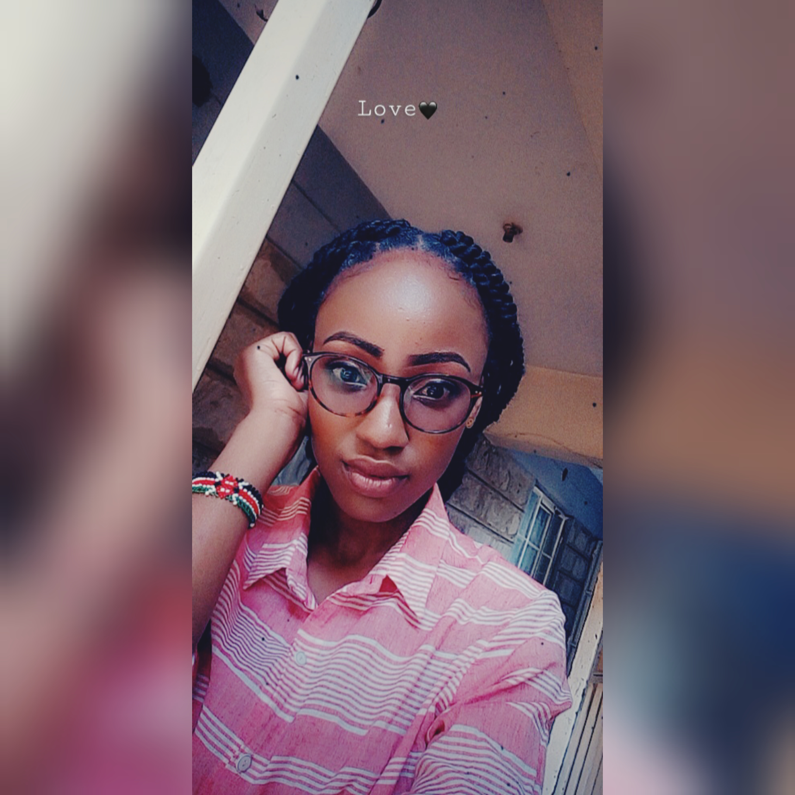
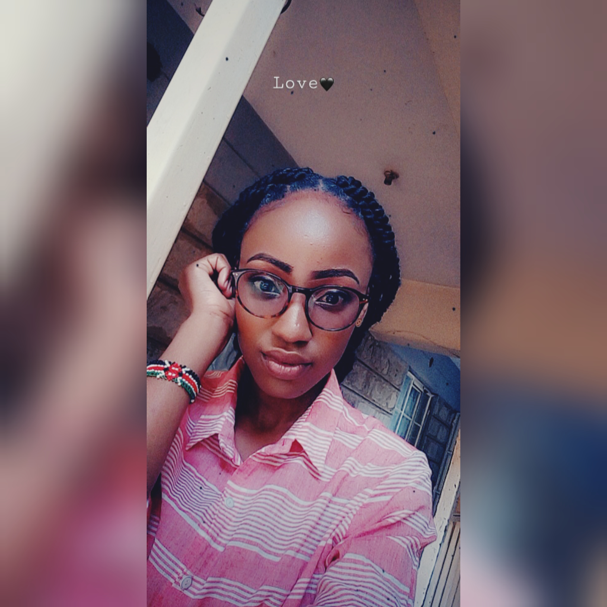
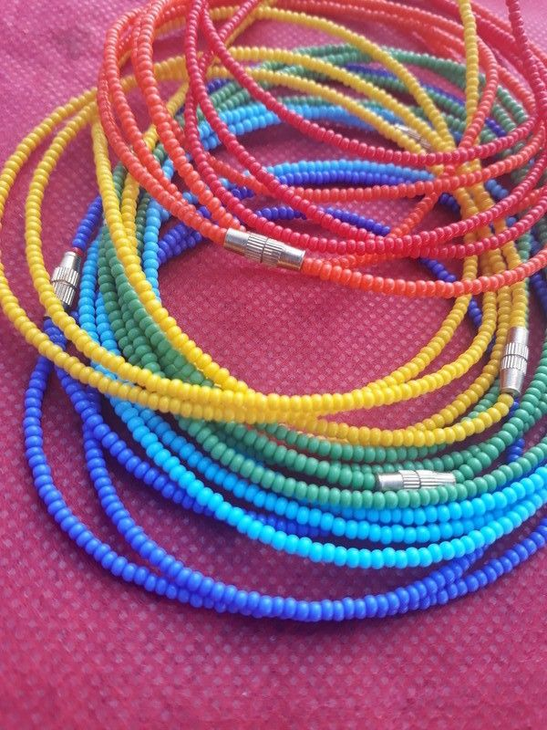
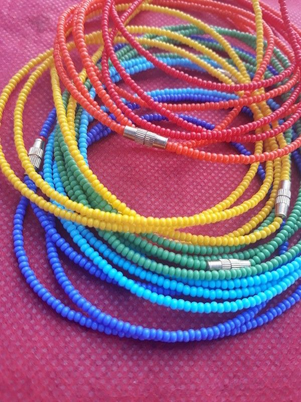
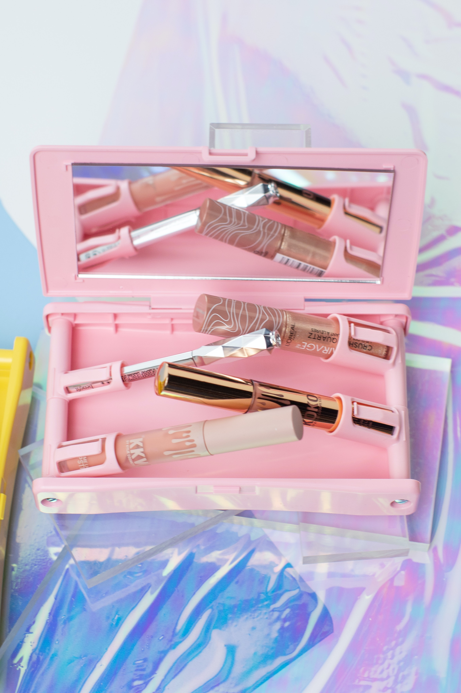
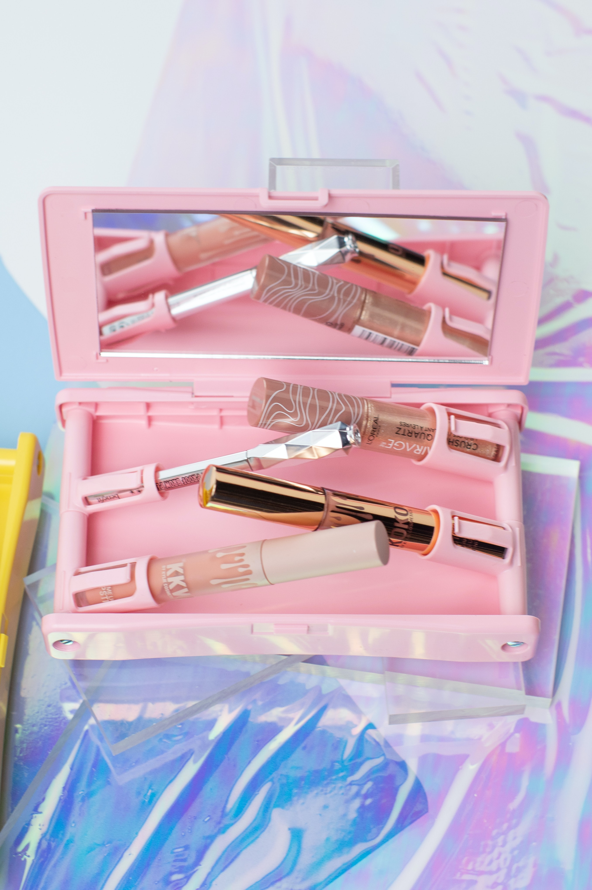

My life story goes a little like this 💞
.
I was born and raised in a family of three in Nairobi Kenya.
My family is a big part of who I am.I am always grateful for their love and support.
My friends, they describe me bigtime.I am always keen in choosing friends because I value friendship.
I am a jovial person and I came to discover I am a protagonist😃my characters and values described with one word.
I practice gratitude everyday a way I get to appreciate everything that happens to me and around me.
My education background is simple,started schooling in Ndurarua Primary School Nairobi
then later joined Kalukuni secondary School in Matuu Yatta for my secondary education.
In 2016 after completing my secondary education,
I decided to take a short course in computer packages
in my area,that was like a norm after high school you either choose driving lessons or computer packages.
I joined AkiraChix this year where I'm pursuing a course in computer programming and UI/UX design.😊
My curiosity and love for tech and design has always been on another level.
Only God knows how many notes of gratitude I have in my gratitude jar,thanking AkiraChix for the lovely opportunity they gave me.
Generally, tech is magic I'm always fascinated on how lines of code can build amazing sites and softwares.
I love the way design and coding goes hand in hand and I always anticipate to be a great UI/UXdesigner and an amazing developer after the program.
I am also intersted in make up and photography and fun fact is,
they also go hand in hand too. 😂
The amazing thing is all my interests are kinda in pairs because,
I also do bead work when I'm free and I'm also interested in knitting.😃
 

 

I aspire to be a great developer and a UI/UX designer after AkiraChix,get a nice and job achieve most of my goals.
I want to enroll for make up classes next year as part time classes and
maybe after that Photograpy classes!!
Start a bead work business and learn how to knit so that I could incorporate that in the bead work business.😊